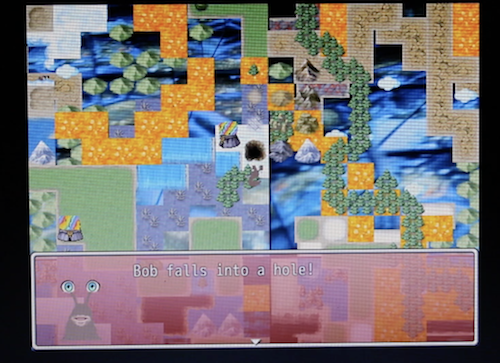
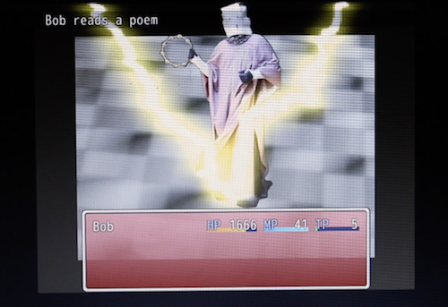
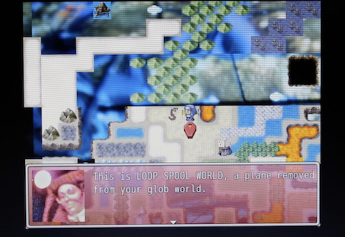
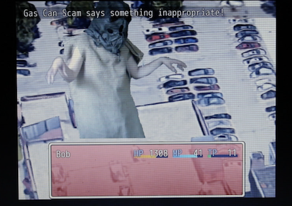

| screenshots  Bob the Slug falls from Loop Spool world to this one. |  Bob battles MC Drywall with radical moves. |
 The Nun explains Loop Spool World to Bob the Slug. |  Bob battles Gas Can Scam in downtown Rochester. |
Bob the Slug meets the Bloody Noes is a playable RPG made for Games for Windows, a Swampbabes storefront gallery during the Rochester Bienniel.